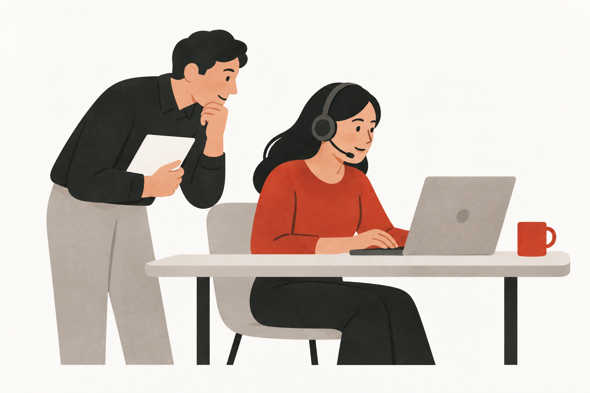

Nestlé / Selected work
Hardware Device Research
Evaluating workplace devices through the tasks, environments and support needs they must accommodate.
01 / Context & contribution
The work in context
Choosing an employee device is a service decision as well as a hardware decision. The research examined whether assigned equipment supported everyday work, considering mobility, accessories and the wider support experience.
My focus
My focus was research into device suitability: relating employee feedback to work requirements and translating the analysis into recommendations for device assignment and support.
02 / Approach
How the work was structured
Define suitability
Frame the study around the ability to carry out work with appropriate equipment, rather than brand preference or specifications alone.
Gather experience data
Use a survey of employees who had received a device to understand everyday tasks, work settings and their experience of the equipment.
Interpret different needs
Examine needs across working contexts and develop personas that describe how tasks and mobility shape equipment requirements.
Prepare decisions
Structure recommendations around assignment, accessories, support and lifecycle considerations, with follow-up research where more explanation is needed.
03 / Design reasoning
What the approach makes possible
A device specification does not describe the whole experience. Research needs to account for the environment in which the device is used and the support that helps someone keep working.
04 / Outputs & next steps
What the work contributed
- Device-experience research report
- Personas organised around work needs
- Recommendations for assignment and support
- Recommendation follow-up plan
Delivery & follow-up
The documented outcome is a research and recommendation package. Procurement decisions, implementation status, supplier comparisons and internal performance measures are outside this public case.
This account describes collaborative work through my research and design focus. Internal names, participant information, findings, business measures and source materials are omitted. Process descriptions are rewritten for public presentation.
Explore my research practice